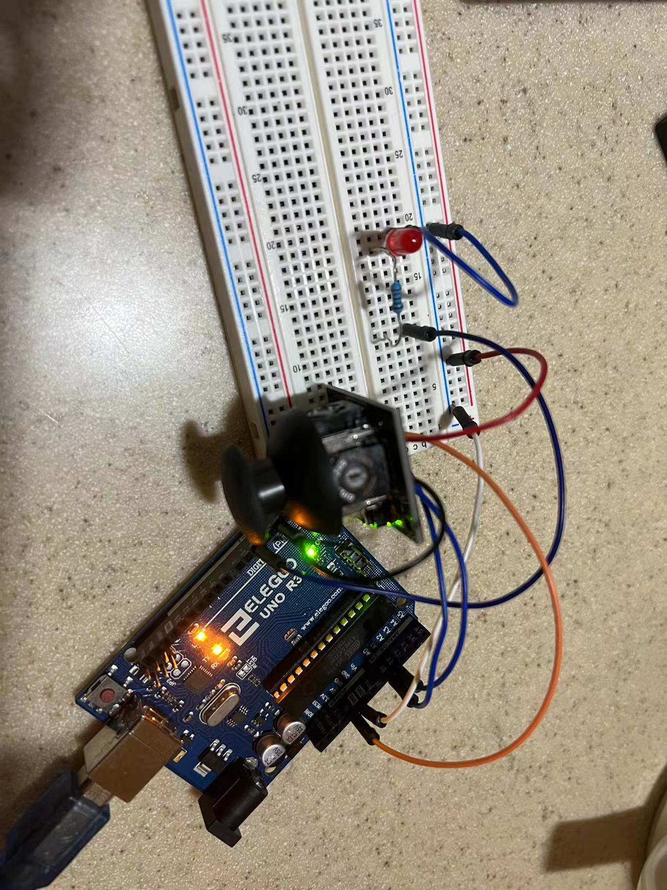

Assignment6

This is the the gif for the circuit's operation!
Circuit's Schematic
Photo of the Circuit
Firmware:
int x = A0; // the number of the joystick x-axis pin
int y = A1; // the number of the joystick y-axis pin
int xval = 0; // variable for reading the joystick x-axis status
int yval = 0; // variable for reading the joystick y-axis status
void setup() {
Serial.begin(9600); // initialize the serial communications:
Serial.setTimeout(10); // set the timeout for parseInt
pinMode(5, OUTPUT); // set pin 5 as output
}
void loop() {
xval = analogRead(x); // reads the x value of the joystick (value between 0 and 1023)
yval = analogRead(y); // reads the y value of the joystick (value between 0 and 1023)
// print the results to the Serial Monitor as array for js to read:
Serial.print("[");
Serial.print(xval);
Serial.print(",");
Serial.print(yval);
Serial.println("]");
if (Serial.available() > 0) { // if there's serial data
int inByte = Serial.read(); // read it
if (inByte == 114){ // if the enter key is pressed
digitalWrite(5, HIGH); // Turn on the LED
} else {
digitalWrite(5,LOW);
}
}
}
var serial; // variable to hold an instance of the serialport library
var portName = 'COM3' //rename to the name of your port
var dataarray = []; //geting joystick x and y values
function setup() {
serial = new p5.SerialPort(); // make a new instance of the serialport library
serial.on('list', printList); // set a callback function for the serialport list event
serial.on('connected', serverConnected); // callback for connecting to the server
serial.on('open', portOpen); // callback for the port opening
serial.on('data', serialEvent); // callback for when new data arrives
serial.on('error', serialError); // callback for errors
serial.on('close', portClose); // callback for the port closing
serial.list(); // list the serial ports
serial.open(portName); // open a serial port
createCanvas(1400, 800);
noStroke();
rectMode(CENTER);
}
// get the list of ports:
function printList(portList) {
// portList is an array of serial port names
for (var i = 0; i < portList.length; i++) {
// Display the list the console:
print(i + " " + portList[i]);
}
}
function serverConnected() {
print('connected to server.');
}
function portOpen() {
print('the serial port opened.')
}
function serialError(err) {
print('Something went wrong with the serial port. ' + err);
}
function portClose() {
print('The serial port closed.');
}
function serialEvent() {
if (serial.available()) {
var datastring = serial.readLine(); // readin some serial
var newarray;
try {
newarray = JSON.parse(datastring); // can we parse the serial
} catch(err) {
//console.log(err);
}
if (typeof(newarray) == 'object') {
dataarray = newarray;
}
}
}
function keyPressed() {
//console.log("writing key");
serial.write(key);
}
function draw() {
background(230); // set background color
fill(0); // text color
text("Press Enter to turn on the LED and any other to turn off", 50, 50); // print on the page
fill(244, 122, 158); // set background color
rect(dataarray[0], dataarray[1], 30, 30); // move a 30x30 rectangle on the screen
}